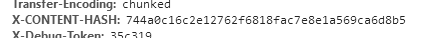

在web程序开发中，经常会遇到某个操作需要添加操作前或操作后的功能；
很多web框架中都有现成的preExceute()和postExceute(),但是symfony没有这样的定义。
但是可以利用自身组件event dispatcher 干扰request->response的过程。
yes just it
举例：比如某些控制器里的方法的访问需要定义个token，其他控制器不需要， 可进行如下操作.
在使用kernel.controller事件之前的处理 => preExceute()
定义允许的token参数
1 | # src/config/services.yaml |
定义需要验证的controller,
为了能够区别需要验证和不验证的控制器， 可定义个接口，需要验证的控制器需要实现该接口
定义接口
1 | # src/Controller/TokenAuthenticatedController.php |
定义需要验证的控制器
1 | # src/Controller/FooController.php |
创建事件订阅者
1 | # src/EventSubscriber/TokenSubscriber.php |
给TokenSubscriber传递参数tokens
1 | # src/config/services.yaml |
现在如果访问/bar or /bar?token=xxxx(!pass1|pass2)，会报错
但是访问 /bar?token=pass1 则正常
使用kernel.response处理事件之前 => postExceute()
在onKernelController方法里验证通过后增加
1 | # src/Controller/FooContoller.php |
定义response处理方法
1 | # src/Controller\FooController.php |
这是效果
